Il diario di prigionia
Le pagine del diario della prigionia di Giovanni Martinelli tra il 27 gennaio ed il 31 marzo del 1918
Il documento è un taccuino scritto a matita di un centinaio di pagine che raccoglie i pensieri, le speranze ed i tormenti durante la prigionia al campo di Dunaszerdahely.
Inserirò le pagine originali, a volte di difficile lettura, mano a mano che le avrò trascritte.
Il documento è un taccuino scritto a matita di un centinaio di pagine che raccoglie i pensieri, le speranze ed i tormenti durante la prigionia al campo di Dunaszerdahely.
Inserirò le pagine originali, a volte di difficile lettura, mano a mano che le avrò trascritte.
Mappa dei campi in Europa della grande guerra

Il campo di Dunaszerdahely
Estratto dal libro "Mario Pazzi - 151° Reggimento fanteria Brigata Sassari"
Mario Pazzi di questo periodo ci lascia un interessante e ricco archivio fotografico, dove vengono ritratti oltre ai momenti di vita, le attività e l’organizzazione nei campi, altri ufficiali prigionieri, ripresi in gruppo o singolarmente.
Apri il documento PDF · mario_pazzi.pdf
Apri il documento PDF · estratto_campo_prigionia_dunaszerdahely.pdf
Mario Pazzi di questo periodo ci lascia un interessante e ricco archivio fotografico, dove vengono ritratti oltre ai momenti di vita, le attività e l’organizzazione nei campi, altri ufficiali prigionieri, ripresi in gruppo o singolarmente.
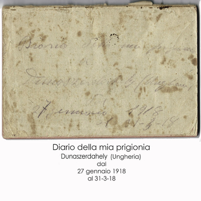
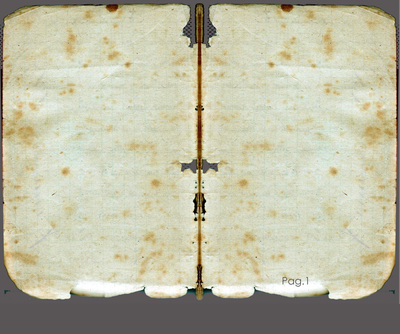
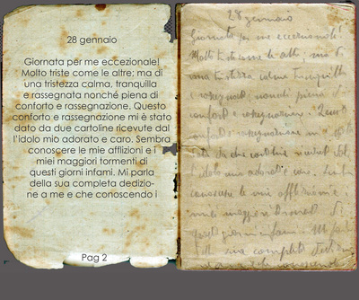
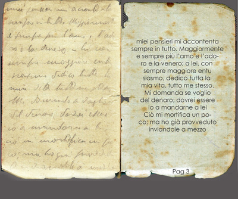
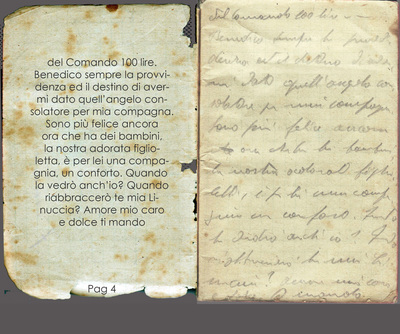
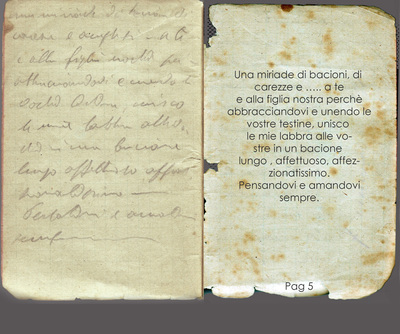
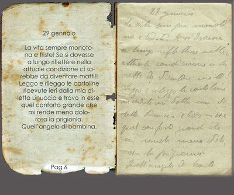
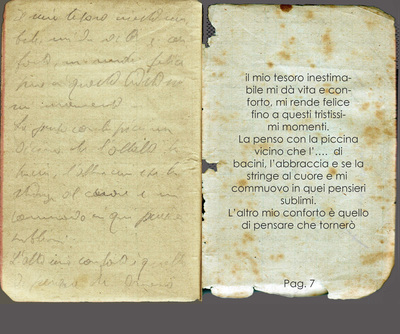
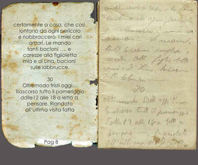
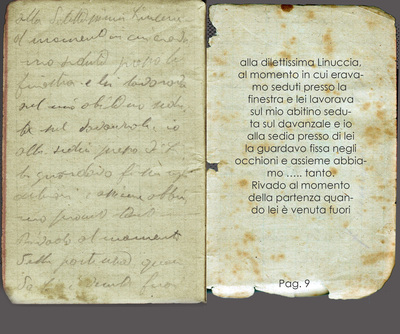
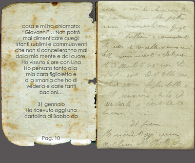
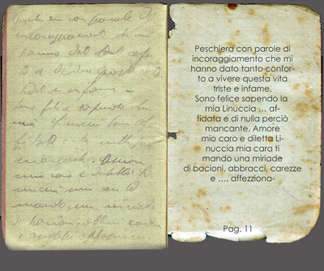
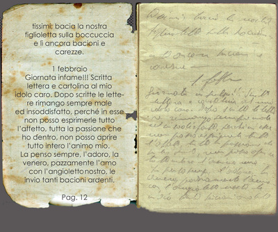